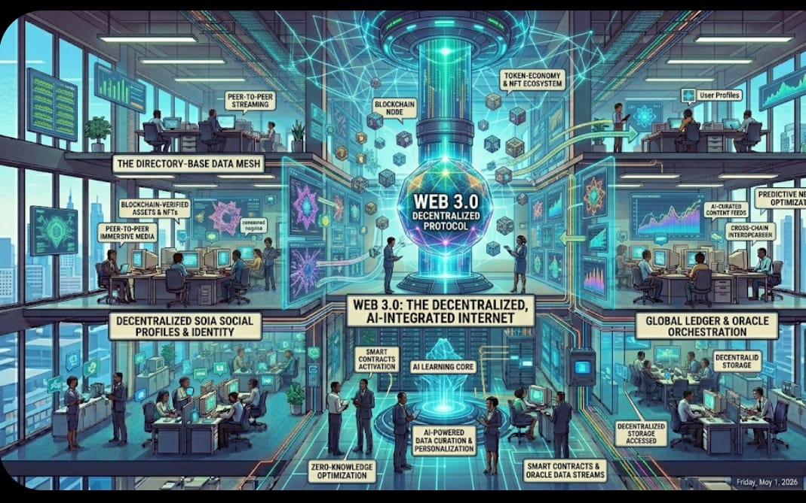

Definition
Web 3.0 is the next evolution of the web, often referred to as the decentralized or semantic web. It focuses on giving users more control over their data and improving how information is understood and processed by machines.
It incorporates technologies such as artificial intelligence, blockchain, and data decentralization.
Explanation
In Web 3.0, systems can understand and interpret data more intelligently, allowing for more personalized and efficient user experiences.
Decentralization reduces reliance on central authorities, giving users greater ownership and privacy over their information. This makes the web more secure, transparent, and user-focused.